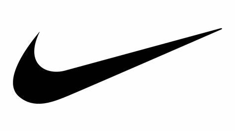
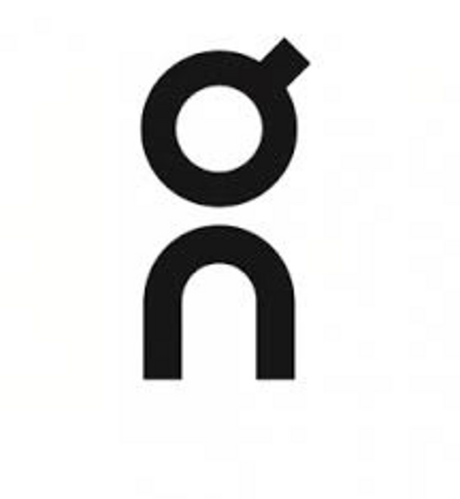

Notre entreprise à été conçue pour offrir aux coureurs leur paire de soulier adéquate dépendement du type de course. Nous
offrons une gamme assez large de différentes compagnies
de souliers de course pour offrir à nos clients le plus de choix et de diversité possible.
Nous avons pris la décision de mettre ces photos de course en arrière-plan
pour ajouter une thématique non seulement au site web.
De plus, nous avons remplacés le menu du haut pour quelque chose d'un peu plus moderne et moins aggressant pour l'oeil. De plus, la simplicité du menu ci-dessus
vous facilite la recherche du produit qui vous convient le mieux puisqu'il y a moins de sous-catégories ce qui permet l'accès aux informations plus rapide.
En effet, ces compagnies ont bien inspirés notre site web :


Thomas Deschênes-Cyr (2254016) & Chen
Thomas : J’ai travaillé avec l’aide de Chen au niveau du choix d’images et d’esthétique du site web .
Pour ce qui est du contenu lui-même, la fixation de prix, le choix des chaussures montrés, les textes explicatifs ce fut un succès.